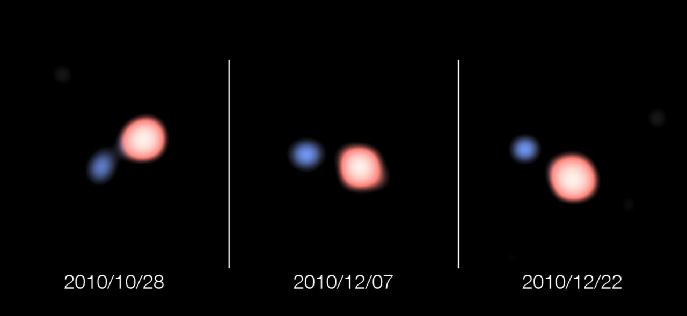

Symbiotic stars

Not only do they constitute an important stage in the binary evolution of low- and intermediate-mass stars - possibly being progenitors of some Type Ia supernovae - but they are as well useful laboratories of several physical processes, chief among them the mass transfer. There is still ongoing discussion as to whether mass transfer in symbiotic stars take place via stellar wind or via Roche-lobe overflow.
I have used interferometric techniques to address this point. My refereed paper shows the results obtained, which are further developed in this Messenger article. Interferometry was also used to obtain an incisive look at the symbiotic star 4 Lep. With a colleague, we also made the unequivocal detection of the tidal deformation of a red giant in a binary system via interferometry. More recently, I also revisited symbiotic binaries with interferometry (here and here).
I performed numerical simulations of mass transfer in such systems, in particular to try to explain the transition from the quiescent to the active state in symbiotic stars.
You can read here and here, examples of when symbiotic stars are also polluted by wind accretion and are therefore also barium stars. Moreover, given their emission lines, they are also sometimes mistaken for planetary nebulae.
Finally, I have written some reviews about wind mass transfer, for example in this paper.